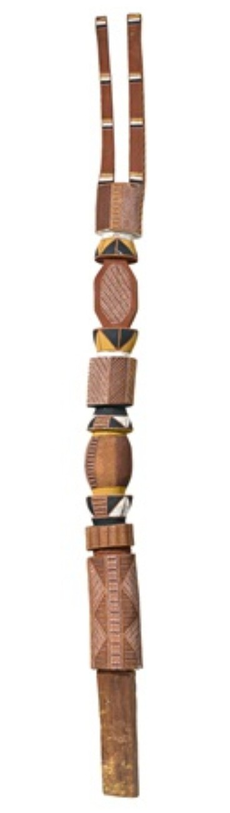

Curatorial note. This essay sets a single object at its centre — Leon Puruntatameri’s Tiwi Pukumani pole (tutini), 2000 — and reads it beside two works by Constantin Brâncuși: the Endless Column at Târgu Jiu and the Bird in Space marbles held at the National Gallery of Australia in Canberra. All three are vertical; all three carry the dead, or the essence of flight, upward. Yet the argument here is the opposite of fusion. Following the collection’s discipline of convergence, not diffusion — and the newer ethics of relational curation and Indigenous data sovereignty — it holds these traditions in what the literature calls responsible proximity: close enough to see, never merged into one. Where it compares, it compares form, space and display, never inner cosmology. Presented bilingually; use the language selector above for the Romanian edition.Notă curatorială. Acest eseu așază un singur obiect în centrul său — stâlpul Pukumani (tutini) al lui Leon Puruntatameri, 2000 — și îl citește alături de două lucrări ale lui Constantin Brâncuși: Coloana fără sfârșit de la Târgu Jiu și marmurele Pasăre în văzduh aflate la National Gallery of Australia din Canberra. Toate trei sunt verticale; toate trei poartă morții, ori esența zborului, în sus. Și totuși argumentul de aici este opusul contopirii. Urmând disciplina colecției — convergență, nu difuziune — și etica mai nouă a curatoriatului relațional și a suveranității datelor indigene, el ține aceste tradiții în ceea ce literatura numește apropiere responsabilă: destul de aproape pentru a le vedea, niciodată contopite într-una singură. Acolo unde compară, compară forma, spațiul și expunerea, niciodată cosmologia lăuntrică. Prezentat bilingv; folosiți selectorul de limbă de mai sus pentru ediția în română.
I. The pole and the columnI. Stâlpul și coloana
In the visual culture of the Tiwi people of Melville and Bathurst Islands, the decorated grave-posts known as tutini are not neutral vertical sculptures or abstract monuments. They are the sacred, functional centrepieces of the Pukumani mortuary ceremony, a ritual system rooted in the death of the ancestral figure Purukupali. Commissioned by grieving families and carved by kinship-designated artists, tutini are erected around the grave to mark the passage of the deceased from the earthly realm (mupuditi) to the spirit world (mopaditi).
În cultura vizuală a poporului Tiwi din Insulele Melville și Bathurst, stâlpii funerari decorați numiți tutini nu sunt sculpturi verticale neutre, nici monumente abstracte. Ei sunt piesele centrale, sacre și funcționale, ale ceremoniei funerare Pukumani, un sistem ritual înrădăcinat în moartea figurii ancestrale Purukupali. Comandați de familiile îndoliate și ciopliți de artiști desemnați prin rudenie, tutini sunt înălțați în jurul mormântului pentru a însemna trecerea celui decedat din tărâmul pământesc (mupuditi) în lumea spiritelor (mopaditi).
The Tiwi tell how both death and the ceremony began. In the account the Vatican Museums’ Ethnological Museum (Anima Mundi) gives beside its own Pukumani poles, the ancestor Purukupali and his wife Bima had an infant son, Jinani. While Bima wandered off with Japara, a young man, the child was left asleep in the shade; the sun moved, and the boy died in the heat. When Purukupali found his son dead, grief remade the world: he decreed that from then on every living thing must die — as my son has died, so all must follow. Until that moment, the Tiwi say, there had been no death.
Tiwi povestesc cum au început deopotrivă moartea și ceremonia. În relatarea pe care Muzeul Etnologic al Muzeelor Vaticane (Anima Mundi) o dă alături de propriii săi stâlpi Pukumani, strămoșul Purukupali și soția sa Bima aveau un fiu sugar, Jinani. În timp ce Bima a plecat cu Japara, un tânăr, copilul a fost lăsat adormit la umbră; soarele s-a mutat, iar băiatul a murit de căldură. Când Purukupali și-a găsit fiul mort, durerea a refăcut lumea: a hotărât ca de atunci înainte tot ce este viu să moară — așa cum a murit fiul meu, așa trebuie să urmeze toți. Până în acea clipă, spun Tiwi, nu existase moartea.
Purukupali fought Japara, who fled into the sky and became the Moon, still carrying the wounds of that fight in his monthly waxing and waning. Then Purukupali took up the body of his child, wrapped in bark, and walked backwards into the sea, where a whirlpool closed over them both — the first death. To mourn him the first Pukumani was made: the carved and painted grave-poles, the body-paint that hides the living from the returning spirit (mopaditi), the songs and the dances. Every tutini since re-enacts that first funeral, and Leon Puruntatameri’s pole belongs to the same unbroken line.
Purukupali s-a luptat cu Japara, care a fugit în cer și a devenit Luna, purtând și azi rănile acelei lupte în creșterea și descreșterea sa lunară. Apoi Purukupali a luat trupul copilului său, învelit în scoarță, și a intrat de-a-ndăratelea în mare, unde un vârtej s-a închis peste amândoi — cea dintâi moarte. Pentru a-l jeli s-a făcut cel dintâi Pukumani: stâlpii funerari ciopliți și pictați, vopseaua de corp care ascunde pe cei vii de spiritul care se întoarce (mopaditi), cântecele și dansurile. Fiecare tutini de atunci reface acea dintâi înmormântare, iar stâlpul lui Leon Puruntatameri aparține aceleiași descendențe neîntrerupte.
Watch — a Pukumani ceremony, Tiwi Islands (2010)Vizionează — o ceremonie Pukumani, Insulele Tiwi (2010)
The pole carved by the master Tiwi artist Leon Puruntatameri embodies this ceremonial specificity. It is not an anonymous ‘primitive’ artifact: it carries individual authorship, clan knowledge, and ceremonial authority. Its ochre geometric patterns (jilamara), its carved apertures and its structural top-pieces encode strict limits of acceptable innovation, kinship obligation, and spiritual containment. To alienate a tutini from its mortuary framework is to strip it of its living relational reality — to reduce an active instrument of grief and ancestral continuity to a static museum specimen.
Stâlpul cioplit de maestrul artist Tiwi Leon Puruntatameri întruchipează această specificitate ceremonială. Nu este un artefact «primitiv» anonim: poartă o autorie individuală, cunoaștere de clan și autoritate ceremonială. Modelele sale geometrice în ocru (jilamara), deschiderile sculptate și piesele structurale de la vârf codifică limite stricte ale inovației îngăduite, obligații de rudenie și conținere spirituală. A înstrăina un tutini de cadrul său funerar înseamnă a-l despuia de realitatea lui relațională vie — a reduce un instrument activ al doliului și al continuității ancestrale la un simplu specimen de muzeu.

Constantin Brâncuși’s Endless Column (Coloana Fără Sfârșit), raised in 1937 at Târgu Jiu, belongs to a wholly distinct genealogy. Part of a monumental ensemble dedicated to the young Romanians who died defending the town in the First World War, the column is a civic memorial of national remembrance. Standing 29.33 metres, its cast-iron modules threaded over a central steel spine, it draws on the vernacular woodcarving of Oltenia — the wooden pillars of the Romanian peasant house — essentialised into a repeating sequence of truncated rhomboidal beads. Brâncuși sought not the literal appearance of a pillar but the concept of infinite upward movement, ascension, eternal becoming.
Coloana fără sfârșit (Coloana Fără Sfârșit) a lui Constantin Brâncuși, ridicată în 1937 la Târgu Jiu, aparține unei genealogii cu totul distincte. Parte a unui ansamblu monumental dedicat tinerilor români căzuți apărând orașul în Primul Război Mondial, coloana este un memorial civic al pomenirii naționale. Înaltă de 29,33 de metri, cu module de fontă înșirate pe o coloană vertebrală de oțel, ea se inspiră din cioplitul popular al Olteniei — stâlpii de lemn ai casei țărănești românești — esențializați într-o succesiune repetată de mărgele romboidale trunchiate. Brâncuși nu a căutat înfățișarea literală a unui stâlp, ci conceptul de mișcare ascendentă infinită, înălțare, devenire eternă.
Both the tutini and the Endless Column use verticality to organise human memory, grief and honour in public space. But they do so through entirely distinct cultural languages, and the distance between them is exactly the subject of this essay.
Atât tutini, cât și Coloana fără sfârșit folosesc verticalitatea pentru a rândui memoria, doliul și cinstirea în spațiul public. Dar o fac prin limbaje culturale cu totul distincte, iar distanța dintre ele este tocmai subiectul acestui eseu.
II. Against the universalII. Împotriva universalului
The critical hazard in comparative art history is the pull toward a universalising ‘primitivism’ — a habit in which Western curators absorb non-Western sacred art into European modernist theory, claiming that every culture reveals the same timeless, primordial truth. That flattening is not neutral: it is a quiet act of extraction, and it is precisely what this collection refuses. Grounded in relational curation and Indigenous data sovereignty, PacificaRomania sets a narrow, low-risk comparative frame and states its rules in the open.
Pericolul critic în istoria comparată a artei este atracția spre un «primitivism» universalizant — un obicei prin care curatorii occidentali absorb arta sacră non-occidentală în teoria modernistă europeană, pretinzând că fiecare cultură dezvăluie același adevăr atemporal, primordial. Această aplatizare nu este neutră: este un act tăcut de extracție și este tocmai ceea ce această colecție refuză. Întemeiată pe curatoriat relațional și pe suveranitatea datelor indigene, PacificaRomania fixează un cadru comparativ îngust, cu risc scăzut, și își enunță regulile pe față.
| DomainDomeniu | Low-risk framing (adopted)Cadru cu risc scăzut (adoptat) | Prohibited framingCadru interzis |
|---|---|---|
| Tiwi attributionAtribuire Tiwi | Puruntatameri named; Pukumani law and the limits of outside reading respected.Puruntatameri numit; legea Pukumani și limitele lecturii din afară respectate. | Absorbed into a generic ‘primitive’ category to validate European art history.Absorbit într-o categorie «primitivă» generică pentru a valida istoria artei europene. |
| Digital morphingMorfing digital | Framed as a contemporary curatorial prompt about public-display debates.Prezentat ca un impuls curatorial contemporan despre dezbaterile expunerii publice. | Letting the morph fuse distinct sacred traditions into one hybrid object.A lăsa morfingul să contopească tradiții sacre distincte într-un singur obiect hibrid. |
| Museum holdingsColecții de muzeu | Canonical museum works (NGA) kept distinct from curator-made installations.Lucrări canonice de muzeu (NGA) ținute distinct de instalațiile create de curator. | Blurring institutional provenance with derivative arrangements.Estomparea provenienței instituționale prin aranjamente derivate. |
III. The garden that broke the lawIII. Grădina care a încălcat legea
The need for strict protocols is not abstract. At the 2017 Melbourne International Flower and Garden Show, an award-winning landscape design installed carved, painted timber posts that closely mimicked Tiwi Pukumani grave-posts, presenting them as decorative garden accents to enhance a residential outdoor scheme. After formal objections from Tiwi artists, cultural custodians and Indigenous arts organisations, the organisers were compelled to dismantle and remove the installation. To the designer, trained in Western formalism, the poles were compelling geometric shapes — perhaps an echo of a modernist vertical like the Endless Column. To the Tiwi, placing pseudo-tutini in a commercial garden was a cosmological and ethical breach: sacred mortuary architecture, carved to manage the volatile spirit (mopaditi) of a specific dead person, reduced to consumer ornament.
Nevoia de protocoale stricte nu este abstractă. La Melbourne International Flower and Garden Show din 2017, un proiect peisagistic premiat a instalat stâlpi de lemn ciopliți și pictați care imitau îndeaproape stâlpii funerari Pukumani Tiwi, prezentându-i ca accente decorative de grădină menite să înfrumusețeze un aranjament rezidențial în aer liber. După obiecțiile formale ale artiștilor Tiwi, ale custozilor culturali și ale organizațiilor de artă indigenă, organizatorii au fost nevoiți să demonteze și să înlăture instalația. Pentru designer, format în formalismul occidental, stâlpii erau forme geometrice atrăgătoare — poate un ecou al unei verticale moderniste precum Coloana fără sfârșit. Pentru Tiwi, așezarea unor pseudo-tutini într-o grădină comercială era o încălcare cosmologică și etică: arhitectură funerară sacră, cioplită pentru a stăpâni spiritul volatil (mopaditi) al unei anume persoane moarte, redusă la ornament de consum.
The episode exposes a legal shortfall. Cultural appropriation, as political theorists define it, is the unauthorised taking of something of cultural value by members of a dominant culture, especially where power imbalance, absent consent and commercial profit meet. Australian copyright and intellectual-property frameworks repeatedly fail to protect Indigenous heritage: copyright demands an identifiable individual author, a fixed medium and a limited term, and does not recognise the collective, transgenerational ownership of sacred designs governed by customary law — Indigenous Cultural and Intellectual Property (ICIP). Non-Indigenous designers exploit that gap under the cover of ‘homage’, ‘inspiration’ or public-domain extraction.
Episodul dezvăluie o lacună juridică. Însușirea culturală, așa cum o definesc teoreticienii politicii, este luarea neautorizată a ceva de valoare culturală de către membrii unei culturi dominante, mai ales acolo unde se întâlnesc dezechilibrul de putere, lipsa consimțământului și profitul comercial. Cadrele australiene ale dreptului de autor și ale proprietății intelectuale eșuează în mod repetat în a proteja patrimoniul indigen: dreptul de autor cere un autor individual identificabil, un suport fix și un termen limitat și nu recunoaște proprietatea colectivă, transgenerațională, a modelelor sacre guvernate de dreptul cutumiar — Proprietatea Culturală și Intelectuală Indigenă (ICIP). Designerii neindigeni exploatează această lacună sub acoperirea «omagiului», a «inspirației» sau a extracției din domeniul public.
IV. Consent, and its limitsIV. Consimțământul și limitele lui
A distinction must be kept clear. Free, Prior and Informed Consent (FPIC) applies strictly to historical patrimony, sacred items and communal cultural property — especially objects alienated under colonial duress, without valid communal consent. It does not apply to contemporary works made by living Indigenous artists expressly for open commercial sale.
O distincție trebuie păstrată limpede. Consimțământul Liber, Prealabil și Informat (FPIC) se aplică strict patrimoniului istoric, obiectelor sacre și proprietății culturale comunitare — îndeosebi obiectelor înstrăinate sub constrângere colonială, fără un consimțământ comunitar valid. El nu se aplică lucrărilor contemporane făcute de artiști indigeni în viață anume pentru vânzarea comercială liberă.
Works such as the Balku Wunungmurra — Wayin ga Mokuy / Bird & Spirit sculptures, hollow-log coffins, Seven Sisters Dreaming canvases and didgeridoos, bought from ethical art centres, commercial galleries or directly from contemporary Aboriginal artists acting with full economic agency, raise no FPIC repatriation concern. These makers exercise autonomy and ownership in producing for the art market; ethical stewardship here means fair remuneration, copyright adherence (the Indigenous Art Code), and accurate cultural attribution — not heritage clearance. Sacred material removed from community under duress is the opposite case, and demands rigorous provenance and compliance.
Lucrări precum sculpturile Balku Wunungmurra — Wayin ga Mokuy / Pasăre și Spirit, sicriele-trunchi scobite, pânzele cu Visul Celor Șapte Surori și didgeridoo-urile, cumpărate de la centre de artă etice, de la galerii comerciale sau direct de la artiști aborigeni contemporani care acționează cu deplină autonomie economică, nu ridică nicio problemă de repatriere de tip FPIC. Acești creatori își exercită autonomia și proprietatea producând pentru piața de artă; grija etică înseamnă aici remunerare corectă, respectarea dreptului de autor (Codul Artei Indigene) și atribuire culturală exactă — nu clearance de patrimoniu. Materialul sacru scos din comunitate sub constrângere este cazul opus și cere proveniență și conformitate riguroase.

V. Bird in Space at CanberraV. Pasăre în văzduh, la Canberra
The National Gallery of Australia in Canberra holds two marble versions of Constantin Brâncuși’s Bird in Space (L’Oiseau dans l’espace), acquired in the 1970s during a transformative era for the collection. In polished white marble, poised on multi-part pedestals of limestone and hardwood, they are Brâncuși’s ultimate reduction of form: not a literal avian body but the trajectory, the weightlessness, the pure essence of flight. Their fragility — narrow ankles, a high centre of gravity — means that moving and displaying them requires custom stabilising cradles of fibreglass and aluminium; they are exquisitely sensitive to framing, lighting, vertical clearance and sightline. For Brâncuși the pedestal was never a passive support but an integral part of the work’s geometry, mediating the transition from the floor to the upward flight of the polished form.
National Gallery of Australia din Canberra deține două versiuni în marmură ale Păsării în văzduh (L’Oiseau dans l’espace) a lui Constantin Brâncuși, dobândite în anii 1970, într-o epocă de transformare a colecției. În marmură albă lustruită, așezate pe piedestaluri din mai multe părți, de calcar și lemn de esență tare, ele sunt reducerea ultimă a formei la Brâncuși: nu un trup de pasăre literal, ci traiectoria, imponderabilitatea, esența pură a zborului. Fragilitatea lor — glezne înguste, un centru de greutate ridicat — face ca mutarea și expunerea lor să ceară suporturi de stabilizare făcute la comandă, din fibră de sticlă și aluminiu; sunt extrem de sensibile la încadrare, lumină, spațiul liber pe verticală și linia privirii. Pentru Brâncuși, piedestalul nu a fost niciodată un suport pasiv, ci o parte integrantă a geometriei lucrării, mediind trecerea de la podea la zborul ascendent al formei lustruite.
To capture these spatial dynamics, curator and researcher Dan Barbulescu recorded a 360-degree Virtual Reality video of the Bird in Space marbles inside the galleries of the NGA. The recording lets a viewer move around the fragile sculptures, feeling their volumetric presence, the reflections on the polished stone, and their relation to the gallery’s architecture. In this collection’s framework the VR file is a documented spatial witness — an interpretive tool that records how Brâncuși’s birds occupy institutional space in Canberra, with strict attribution to the NGA as holder of the originals. It is a bridge to the works, never a substitute for them.
Pentru a surprinde aceste dinamici spațiale, curatorul și cercetătorul Dan Barbulescu a înregistrat un film în Realitate Virtuală la 360 de grade al marmurelor Pasăre în văzduh în sălile NGA. Înregistrarea îngăduie privitorului să se miște în jurul sculpturilor fragile, simțind prezența lor volumetrică, reflexele de pe piatra lustruită și relația lor cu arhitectura galeriei. În cadrul acestei colecții, fișierul VR este un martor spațial documentat — un instrument interpretativ care consemnează felul în care păsările lui Brâncuși ocupă spațiul instituțional la Canberra, cu atribuire strictă către NGA, deținătorul originalelor. Este o punte către lucrări, niciodată un înlocuitor al lor.
Watch — 360° VR at the NGAVizionează — VR 360° la NGA
VI. The morph and the meetingVI. Morfingul și întâlnirea
In 2020, at the Embassy of Romania in Canberra, these threads met. Ambassador Nineta Bărbulescu — Ambassador of Romania to Australia (2013–2020) and Dean of the Diplomatic Corps — hosted a cultural-diplomacy programme for the Governor-General of Australia, General David Hurley, and Mrs Linda Hurley. At its centre was the Pacifica Romania exhibition and a custom digital morphism that visually morphed Puruntatameri’s Tiwi Pukumani pole into Brâncuși’s Endless Column.
În 2020, la Ambasada României la Canberra, aceste fire s-au întâlnit. Ambasadoarea Nineta Bărbulescu — Ambasador al României în Australia (2013–2020) și decan al Corpului Diplomatic — a găzduit un program de diplomație culturală pentru Guvernatorul General al Australiei, generalul David Hurley, și pentru doamna Linda Hurley. În centrul lui se aflau expoziția Pacifica Romania și un morfism digital care transforma vizual stâlpul Pukumani Tiwi al lui Puruntatameri în Coloana fără sfârșit a lui Brâncuși.
Watch — the 2020 digital morphismVizionează — morfismul digital din 2020

A morph is a dangerous gesture. Without explicit framing, it can produce a seamless fusion that merges two distinct traditions into one hybrid object, implying that Indigenous mortuary art and European modernism are interchangeable variants of a single archetype. This collection frames the 2020 morph strictly as a documented curatorial prompt, sparked by public debates over sculpture display. It does not claim that the tutini evolved into the column, nor that Brâncuși drew his geometry from the Tiwi. The transition is an interpretive catalyst — a way of asking how different societies raise vertical monuments to carry grief, honour the dead, and structure memory across space and time.
Un morfing este un gest primejdios. Fără o încadrare explicită, el poate produce o contopire lină care unește două tradiții distincte într-un singur obiect hibrid, sugerând că arta funerară indigenă și modernismul european ar fi variante interschimbabile ale unui singur arhetip. Această colecție încadrează morfingul din 2020 strict ca pe un impuls curatorial documentat, iscat de dezbaterile publice privind expunerea sculpturii. El nu pretinde că tutini ar fi evoluat în coloană, nici că Brâncuși și-ar fi luat geometria de la Tiwi. Trecerea este un catalizator interpretativ — un fel de a întreba cum ridică diferite societăți monumente verticale pentru a purta doliul, a cinsti morții și a rândui memoria în spațiu și în timp.
The idea travelled. In October 2022, following the ambassador’s appointment to Malaysia, the Pacifica Romania exhibition at the Four Seasons Hotel in Kuala Lumpur presented Aboriginal Birds in Space, conceived by Dan Barbulescu. It set contemporary Indigenous depictions of avian ancestors and desert pathways beside photographic and digital references to Brâncuși’s Bird in Space — the Bird & Spirit sculptures, hollow logs, Seven Sisters works and didgeridoos among them. Rather than fusing, the grouping practised responsible proximity: setting Brâncuși’s weightless abstraction beside First Nations mappings of ancestral bird Songlines — where a bird’s flight is a boundary marker and a law of the land — so that juxtaposition exposes both a formal resonance and a radical cultural difference.
Ideea a călătorit. În octombrie 2022, după numirea ambasadoarei în Malaysia, expoziția Pacifica Romania de la Four Seasons Hotel din Kuala Lumpur a prezentat Păsări aborigene în spațiu, concepută de Dan Barbulescu. Ea a așezat reprezentări indigene contemporane ale strămoșilor-păsări și ale cărărilor deșertului alături de referințe fotografice și digitale la Pasăre în văzduh a lui Brâncuși — printre ele sculpturile Pasăre și Spirit, sicriele-trunchi, lucrările Celor Șapte Surori și didgeridoo-urile. În loc să contopească, gruparea a practicat apropierea responsabilă: punând abstracția imponderabilă a lui Brâncuși lângă cartografierile băștinașe ale Cărărilor de Cântec ale păsărilor ancestrale — unde zborul unei păsări este un semn de hotar și o lege a pământului — astfel încât juxtapunerea să dezvăluie deopotrivă o rezonanță formală și o diferență culturală radicală.
VII. Standing apartVII. A sta deoparte
Modernist European sculpture and Indigenous ceremonial architecture can share a curatorial space — but only in responsible proximity, and only if their sovereignty is kept intact. The visual power of these works needs no artificial fusion; the strength of the encounter lies precisely in the difference it refuses to erase. Display itself is an interpretive, political act, and the digital tools that extend it — a 360° VR walk-around, a morphing sequence — must be deployed with reflexive transparency: as prompts for ethical inquiry, never as instruments of extraction. The pole and the column both rise. They do not become each other.
Sculptura modernistă europeană și arhitectura ceremonială indigenă pot împărți un spațiu curatorial — dar numai în apropiere responsabilă și numai dacă suveranitatea lor rămâne neatinsă. Puterea vizuală a acestor lucrări nu are nevoie de nicio contopire artificială; tăria întâlnirii stă tocmai în diferența pe care refuză să o șteargă. Expunerea însăși este un act interpretativ și politic, iar instrumentele digitale care o prelungesc — o parcurgere în VR 360°, o secvență de morfing — trebuie folosite cu o transparență reflexivă: ca impulsuri pentru interogația etică, niciodată ca instrumente de extracție. Stâlpul și coloana se înalță amândouă. Nu devin una cealaltă.
Notes & sourcesNote și surse
This essay draws on the PacificaRomania archive and on published scholarship on Tiwi mortuary art, Brâncuși’s memorial sculpture, and the ethics of Indigenous cultural and intellectual property. Comparisons are limited to form, space and display; no claim of shared cosmology is made.Acest eseu se sprijină pe arhiva PacificaRomania și pe studii publicate despre arta funerară Tiwi, sculptura memorială a lui Brâncuși și etica proprietății culturale și intelectuale indigene. Comparațiile se limitează la formă, spațiu și expunere; nu se afirmă nicio cosmologie comună.
- The Tiwi tutini and Pukumani. Decorated grave-posts of the Tiwi of Melville and Bathurst Islands, central to the Pukumani mortuary ceremony rooted in the Purukupali narrative; on the passage from mupuditi to mopaditi. Hero object: Leon Puruntatameri, Pukumani pole (tutini), 2000, PacificaRomania collection.Tutini Tiwi și Pukumani. Stâlpi funerari decorați ai poporului Tiwi din Insulele Melville și Bathurst, centrali ceremoniei funerare Pukumani, înrădăcinată în narațiunea despre Purukupali; despre trecerea de la mupuditi la mopaditi. Obiectul-erou: Leon Puruntatameri, Stâlp Pukumani (tutini), 2000, colecția PacificaRomania.
- The first Pukumani — origin story. The Purukupali, Bima and Japara narrative — the first death and the first mortuary ceremony — as recounted by the Vatican Museums’ Ethnological Museum (Anima Mundi) beside its Pukumani funerary poles: Vatican Museums — Pali funerari Pukumani.Primul Pukumani — povestea de origine. Narațiunea despre Purukupali, Bima și Japara — cea dintâi moarte și cea dintâi ceremonie funerară — așa cum o istorisește Muzeul Etnologic al Muzeelor Vaticane (Anima Mundi) alături de stâlpii săi funerari Pukumani: Muzeele Vaticane — Pali funerari Pukumani.
- The living ceremony. A Pukumani mortuary ceremony on the Tiwi Islands, filmed in 2010: YouTube (youtu.be/j_vtfUgeZIo).Ceremonia vie. O ceremonie funerară Pukumani în Insulele Tiwi, filmată în 2010: YouTube (youtu.be/j_vtfUgeZIo).
- The 2020 digital morph. The Pukumani-pole-to-Endless Column morphism presented at the Embassy of Romania, Canberra (2020), available on YouTube: youtube.com/shorts/dGgS0eMbvHw.Morfingul digital din 2020. Morfismul de la stâlpul Pukumani la Coloana fără sfârșit, prezentat la Ambasada României, Canberra (2020), disponibil pe YouTube: youtube.com/shorts/dGgS0eMbvHw.
- Brâncuși, Endless Column. Coloana Fără Sfârșit, Târgu Jiu, 1937; 29.33 m; part of the First World War memorial ensemble; drawn from Oltenian folk woodcarving.Brâncuși, Coloana fără sfârșit. Coloana Fără Sfârșit, Târgu Jiu, 1937; 29,33 m; parte a ansamblului memorial al Primului Război Mondial; inspirată din cioplitul popular oltenesc.
- Brâncuși, Bird in Space. Two marble versions of L’Oiseau dans l’espace held by the National Gallery of Australia, Canberra (acquired 1970s), white marble on limestone and hardwood pedestals; referenced here as museum-held canonical works, distinct from any curator installation.Brâncuși, Pasăre în văzduh. Două versiuni în marmură ale L’Oiseau dans l’espace deținute de National Gallery of Australia, Canberra (dobândite în anii 1970), marmură albă pe piedestaluri de calcar și lemn de esență tare; menționate aici ca lucrări canonice de muzeu, distincte de orice instalație de curator.
- 360° VR at the NGA. Dan Barbulescu, 360-degree VR video of Brâncuși’s Bird in Space in the galleries of the National Gallery of Australia, Canberra: YouTube (youtu.be/_0lvzthsmpg); alternate Google Photos version.VR 360° la NGA. Dan Barbulescu, film VR la 360 de grade al Păsării în văzduh a lui Brâncuși în sălile National Gallery of Australia, Canberra: YouTube (youtu.be/_0lvzthsmpg); versiune alternativă Google Photos.
- The 2017 Melbourne controversy. Pseudo-Pukumani posts installed as garden décor at the Melbourne International Flower and Garden Show were removed after objections from Tiwi artists and Indigenous arts organisations — a standard case in debates on the appropriation of Indigenous forms.Controversa de la Melbourne, 2017. Stâlpi pseudo-Pukumani instalați ca decor de grădină la Melbourne International Flower and Garden Show au fost înlăturați după obiecțiile artiștilor Tiwi și ale organizațiilor de artă indigenă — un caz de referință în dezbaterile despre însușirea formelor indigene.
- FPIC, ICIP and the Indigenous Art Code. Free, Prior and Informed Consent applies to sacred and communal heritage, not to contemporary works sold by living artists with full agency; ethical stewardship of the latter rests on fair remuneration, copyright adherence and accurate attribution.FPIC, ICIP și Codul Artei Indigene. Consimțământul Liber, Prealabil și Informat se aplică patrimoniului sacru și comunitar, nu lucrărilor contemporane vândute de artiști în viață cu deplină autonomie; grija etică pentru acestea din urmă se sprijină pe remunerare corectă, respectarea dreptului de autor și atribuire exactă.
- Cultural diplomacy. The 2020 event at the Embassy of Romania in Canberra was hosted by Ambassador Nineta Bărbulescu for the Governor-General of Australia, General David Hurley, and Mrs Linda Hurley (see also the Cape Romania essay and Country Written in Fire). Nineta Bărbulescu — Wikipedia.Diplomație culturală. Evenimentul din 2020 de la Ambasada României la Canberra a fost găzduit de ambasadoarea Nineta Bărbulescu pentru Guvernatorul General al Australiei, generalul David Hurley, și pentru doamna Linda Hurley (vezi și eseul despre Capul Romania și Ținutul scris în foc). Nineta Bărbulescu — Wikipedia.
- The 2022 installation. Aboriginal Birds in Space, curated by Dan Barbulescu, Pacifica Romania exhibition, Four Seasons Hotel, Kuala Lumpur, October 2022 — a curator-made interpretive dialogue, with full attribution to each included artist (see the companion essay and Seven Sisters).Instalația din 2022. Păsări aborigene în spațiu, curatoriată de Dan Barbulescu, expoziția Pacifica Romania, Four Seasons Hotel, Kuala Lumpur, octombrie 2022 — un dialog interpretativ creat de curator, cu atribuire deplină fiecărui artist inclus (vezi eseul însoțitor și Cele Șapte Surori).
- Attribution protocol. Name the specific Nation (Tiwi, Yolŋu, Warlpiri) and individual artist rather than a generic label; limit comparison to form, space and display; distinguish commercial contemporary acquisition from heritage stewardship; frame digital transforms as prompts, not fusion objects; never present sacred funerary forms as decorative trend.Protocol de atribuire. Numiți națiunea anume (Tiwi, Yolŋu, Warlpiri) și artistul individual, nu o etichetă generică; limitați comparația la formă, spațiu și expunere; deosebiți achiziția comercială contemporană de grija pentru patrimoniu; încadrați transformările digitale ca impulsuri, nu ca obiecte de contopire; nu prezentați niciodată formele funerare sacre ca pe o modă decorativă.